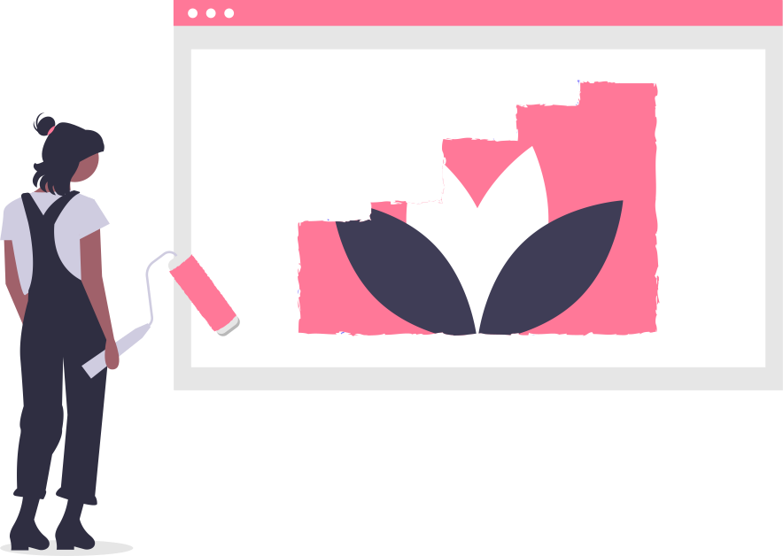

Projects
Here are some of the key projects that I have worked on. Even if they may not be perfect, these are the projects where I feel that I have exhibited my skills, displayed my passions and learnt a lot from!

Here are some of the key projects that I have worked on. Even if they may not be perfect, these are the projects where I feel that I have exhibited my skills, displayed my passions and learnt a lot from!


Presently, together with 4 other Microsoft Learn Student Ambassadors, I am part of a global development team of Elly - a browser extension that uses Computer Vision to generate alt text for images on Twitter. As a backend developer, I used JavaScript to make several API calls with Axios to add features for an accessibility checker. Additionally, I translated the frontend of the extension popup from Figma to HTML and CSS.
After ~8 weeks of Flutter lessons under Raffles INVENT, my school's technology
incubation program, I spent 3 days in 2020 developing an app prototype from scratch using
Flutter (Dart programming language).
As I want to try pursuing assistive technology, I
decided to
attempt making an app that could assist people with dementia.There are still many area of
improvement when it comes to execution, but the basic elements include the following:
A simplified UI for easier comprehension
A gallery
A notes / reminders system
Emergency calling
A locations saver (using Google Maps package)
As part of my internship in 2020, I was tasked with researching the integration of AI
with the newly-released Micro:bit v2 for the purpose of developing potential ideas for curriculum. The
result was training an ML model on Edge Impulse to make a "voice-activated" Micro:bit that responds to
the keyword "Micro:bit".
Afterwards, I edited the C++ code and further refined the model to
accomodate extra keywords. Since I felt that a more engaging problem should include fun projects, I
decided to turn the Micro:bit into a "museum" lighting controller, where the LEDs in front of the
various small
"exhibitions" would turn on/off in response to their respective keywords.
After my exams in 2021, to finally start properly pursuing my interest in Computer Graphics, I decided to read this incredible book by Peter Shirley. It was really fun to be able to apply whatever I've learnt over Physics and Math lessons (specifically topics related to light and trigonometry) to output a proper ray tracer.

In 2019, I made this as one of my first attempts at creating assistive technology. It is a Micro:bit that can play different musical notes depending on its tilt angle. It has a lot of flaws, but I think I have come a long way in terms of understanding mechanisms and 3D design since then, and this gives me something to look back to.
For both my internship and friends, I have completed a fair number of designs using Inkscape (and sometimes GIMP) - from laser-cut signs to "high-quality" meme content to even a YouTube banner! Due to the largely personal nature of these projects, I am not comfortable with sharing them publicly, but they were certainly enjoyable to create.